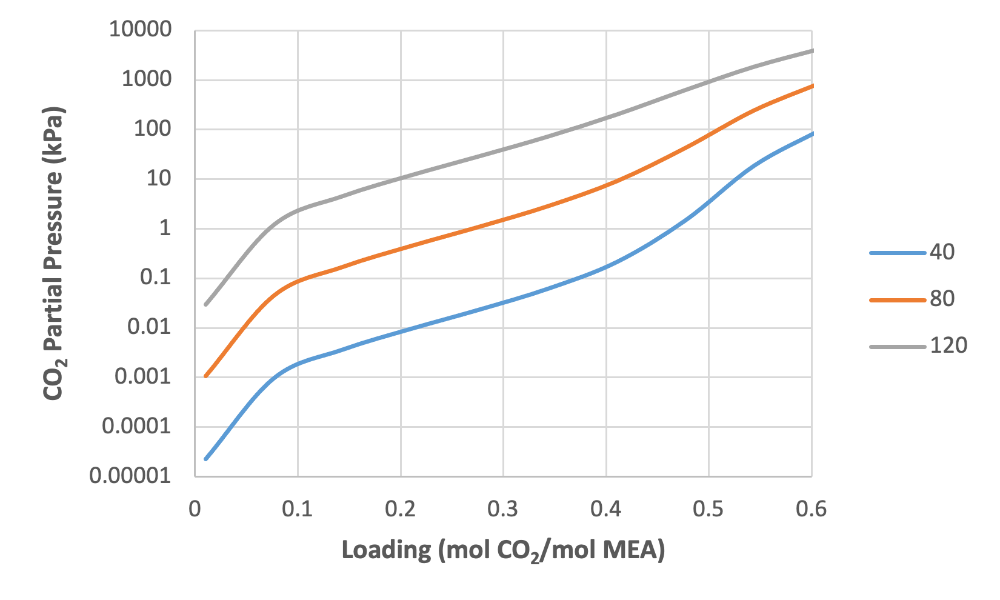

Tutorials
Two tutorials are provide here to acquaint the user with the MEA process model. The first is focused on property calculations, in terms of estimating the equilibrium partial pressure of CO2 as a function of temperature and CO2 loading. The second tutorial is focused on flowsheet simulation of the CO2 absorption and solvent regeneration processes.
Predicting System VLE
Place the “CCSI_MEAModel.bkp” file and the supporting files “ccsi.opt” and “ccsi10.dll” in the same directory. Open the “CCSI_MEAModel.bkp” file. When prompted with the “Column Sizing/Rating Detected” box, select the “Use Legacy Hydraulics” option. If the Model Palette is not visible, it may be selected from the “View” tab at the top of the window. In the Model Palette, navigate to the “Manipulators” tab and then select “Mult” to create a multiplier block, which will be referred to by its default name “B1.” Double-click “B1” and then set the multiplication factor to “1.” Add an inlet stream to the block by clicking “Material” in the Model Palette, the red arrow on the inlet of B1, and then elsewhere in the flowsheet. Repeat the procedure for the outlet stream of B1. Name the inlet and outlet streams as “IN” and “OUT,” respectively. Note: The streams may be renamed by double clicking the default name and typing the new name.
Double-click “IN” and configure it as follows:
Select “Temperature” and “Vapor Fraction” as the “Flash Type” specifications.
Temperature: 40°C.
Vapor Fraction: 0.0001.
Select “Mass-flow” in “gm/hr” as the composition basis. Set the values for “H2O” and “MEA” as “7” and “3,” respectively.
In the left navigation pane, navigate to “Model Analysis Tools” → “Sensitivity,” and then click “New.” The new sensitivity block may be named “PCO2.” Under “Manipulated variable” in the “Vary” tab, select “New,” select “Mole Flow” as “type,” “IN” as “stream,” “CO2” as “component,” and “mol/hr” as the “units.” Under “Manipulated variable limits,” specify “0.0005” and “0.03” as the “lower” and “upper limits,” respectively, and “10” as the “number of points.” Navigate to the “Define” tab and then create a new measured variable named “PCO2.” Under “Edit selected variable,” select “Streams” as the “category,” “Stream-Prop” as the “type,” “IN” as the “stream,” and “PPCO2” as the “prop set”. Change the units to “kPa”. Navigate to the “Tabulate” tab and then click “Fill Variables.” Navigate to the “Options” tab and select the “Do not execute base case,” option under “Execution options.”
Run the simulation by clicking the “Run” arrow or pressing “F5.” The results of the “PCO2” sensitivity block should be consistent with what is shown in Table 1. Note: All of the warnings that appear in the “Control Panel” while running the simulation may be ignored.
Table 1: Results of VLE Sensitivity Block
Row/ Case |
Status |
|
PCO2 (KPA) |
|---|---|---|---|
1 |
OK |
0.0005 |
2.24E-5 |
2 |
OK |
0.003778 |
0.00097 |
3 |
OK |
0.007056 |
0.00363 |
4 |
OK |
0.010333 |
0.00955 |
5 |
OK |
0.013611 |
0.02339 |
6 |
OK |
0.016889 |
0.06171 |
7 |
OK |
0.020167 |
0.21295 |
8 |
OK |
0.023444 |
1.47244 |
9 |
OK |
0.026722 |
18.5729 |
10 |
OK |
0.03 |
103.162 |
From this example, the vapor-liquid equilibrium (VLE) of the ternary MEA-H2O-CO2 system as a function of temperature and CO2 loading may be determined for 30 wt% MEA. The CO2 loading (mol CO2/mol MEA) may be calculated by multiplying the CO2 molar flow by the molecular weight of MEA and dividing by the mass flow of MEA. For example:
Following this procedure and evaluating the sensitivity block for temperatures of 80 and 120°C, by changing the temperature of the stream “IN” and re-running the simulation, a plot similar to Figure 2 may be generated.
Figure 1: CO2 partial pressure as a function of loading and temperature (30 wt% MEA)
CO2 Capture Process Simulation
The base case model that is set up in the file “CCSI_MEAModel.bkp” has operating variables and equipment configurations as specified in Table 2.
Table 2: Variables for Base Case Simulation
Variable |
Value |
|---|---|
ABSLEAN Stream (Absorber Solvent Inlet) |
|
Temperature (°C) |
40.97 |
Pressure (kPa) |
245.94 |
Mass Flow (kg/hr) |
6803.7 |
Component Mole Fractions |
|
H2O |
0.87457 |
CO2 |
0.01585 |
MEA |
0.10958 |
GASIN Stream (Absorber Gas Inlet) |
|
Temperature (°C) |
42.48 |
Pressure (kPa) |
108.82 |
Mass Flow (kg/hr) |
2266.1 |
Component Mass Fractions |
|
H2O |
0.04623 |
CO2 |
0.17314 |
N2 |
0.71165 |
O2 |
0.06898 |
Absorber |
|
Intercooler #1 Flowrate (kg/hr) |
7364.83 |
Intercooler #1 Return Temperature (°C) |
40.13 |
Intercooler #2 Flowrate (kg/hr) |
7421.57 |
Intercooler #2 Flowrate (°C) |
43.32 |
Absorber Top Pressure (kPa) |
108.82 |
Absorber Packing Diameter (m) |
0.64135 |
Absorber Packing Height (ft) |
60.7184 |
Regenerator |
|
Inlet Temperature (°C) |
104.81 |
Inlet Pressure (kPa) |
183.87 |
Top Pressure (kPa) |
183.7 |
Reboiler Duty (kW) |
430.61 |
Packing Diameter (in) |
23.25 |
Packing Height (ft) |
39.6837 |
The variables described in Table 3 may be varied within reason, although abrupt changes in certain variables may results in failure of the simulation to converge. In the simulation provided in the example file, the variables for the “ABSLEAN” and “GASIN” streams can be located by double-clicking the respective streams. The variables for the absorber intercoolers can be located from the navigation pane by selecting “Blocks” → “ABSORBER” → “Configuration” → “Pumparounds,” and the first and second intercoolers are referred to as “P-1” and “P-2,” respectively. The top pressure of the absorber and regenerator can be located by double-clicking the “ABSORBER” and “REGEN” blocks and selecting the “Pressure” tab. Moreover, the reboiler duty for “REGEN” is located under the “Configuration” tab. The column packing diameters and height can be located by selecting “Blocks” → “ABOSRBER” or “REGEN” → “Sizing and Rating” → “Packing Rating” → “1” → “Setup.” The values of the regenerator inlet pressure and temperature are specified in the “PUMP” and “EXCHANGE” blocks, respectively.
Note
A sensitivity block, referred to as “FLOW” in the simulation, is used to set the flowrate of the inlet solvent stream, as the simulation will not automatically converge for such a low flow rate.
Next, the CO2 capture process, which includes the absorber and regenerator columns, is evaluated for two sets of operating conditions.
Open the “CCSI_MEAModel.bkp” file. In the navigation pane, right-click “Blocks,” select “Activate,” right-click “Streams,” and then select “Activate.” Run the simulation. Note: All streams and blocks have been deactivated to reduce the time required to obtain the results for the test in Section 2.2 Predicting System VLE. If block “B1” and streams “IN” and “OUT” have already been created in the same file, they need to be deactivated by right-clicking them and selecting “Deactivate” before activating all streams with the aforementioned procedure.
In the flowsheet, right-click stream “ABSRICH,” select “Results,” and then select “STRIPOUT” from the drop-down arrow at the top of the right column. Ensure that the results obtained match those given in Table 3, noting that only selected rows are included in the table. The results shown in Table 3 were obtained from Aspen V10, and may vary slightly when using Aspen V11.
Table 3: Selected Stream Table Results
Mole Flow mol/hr |
ABSRICH |
STRIPOUT |
|---|---|---|
H2O |
260007 |
256376 |
CO2 |
0.344276 |
0.976410 |
MEA |
8684.95 |
26272.89 |
MEA+ |
12184.17 |
3270.263 |
MEACOO- |
11833.81 |
3152.68 |
HCO3- |
350.36 |
117.58 |
N2 |
33.17 |
2.14E-16 |
O2 |
5.55 |
5.47E-18 |
Temperature C |
52.01 |
120.94 |
Pressure kPa |
108.82 |
183.7 |
Enthalpy J/kmol |
-301829043 |
-281379385 |
Reinitialize the simulation by clicking “Reset” or pressing “Shift+F5,” and then selecting “OK.” In the navigation pane, navigate to “Blocks” → “Absorber” → “Configuration” → “Pumparounds” → “P-1,” and then change the “flow rate” to “3000 kg/hr.” Navigate to “P-2” and then change the “flow rate” to the same value.
Navigate to “Model Analysis Tools” and activate the “FLOW” sensitivity block, which is used to determine the CO2 capture percentage in the absorber and the required reboiler duty for the stripper as a function of the lean solvent flowrate. Execute the model, navigate to the results of the sensitivity block, and verify that the results are similar to those shown in Figure 3; note that these results were generated using Aspen V10 and may be slightly different when running the model with Aspen V11.
Figure 2: Results of the “FLOW” sensitivity block for the case study.
Navigate to “Blocks” → “Absorber” → “Profiles” and then highlight the columns labeled “Vapor Temperature” and “Liquid Temperature.” Under “Plot” on the “Home” tab, select “Custom,” and then verify that the resulting plot resembles Figure 4. Note: These temperature profiles correspond to the last simulation executed (Case 8).
Figure 3: Absorber temperature profile for the case study.
Navigate to “Blocks” → “Regen” → “Profiles” and then repeat the procedure described in Step 5. Verify that the temperature profile resembles what is shown in Figure 4.
Figure 4: Regenerator temperature profile for the case study.